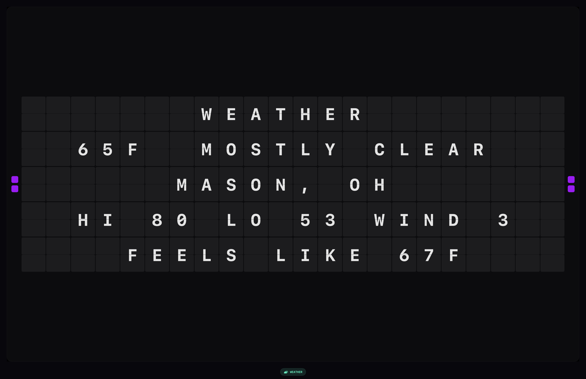
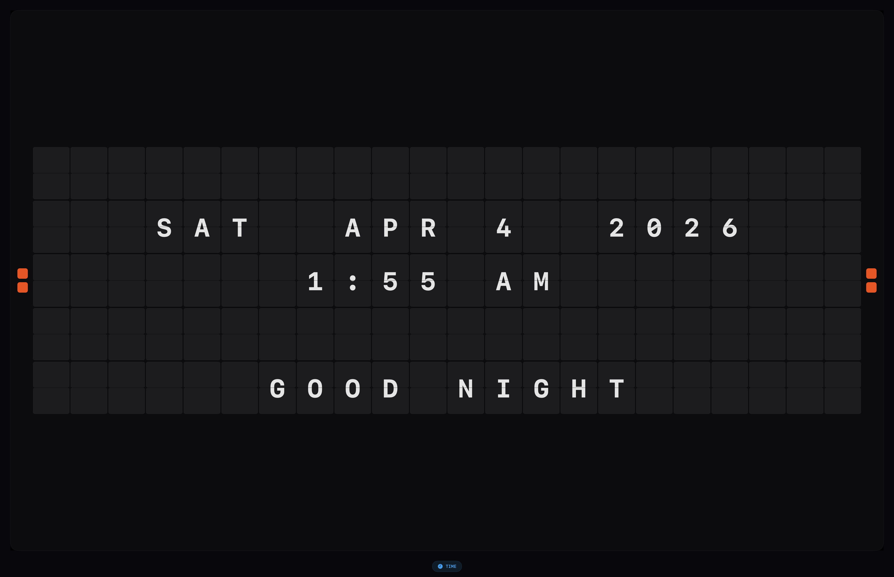
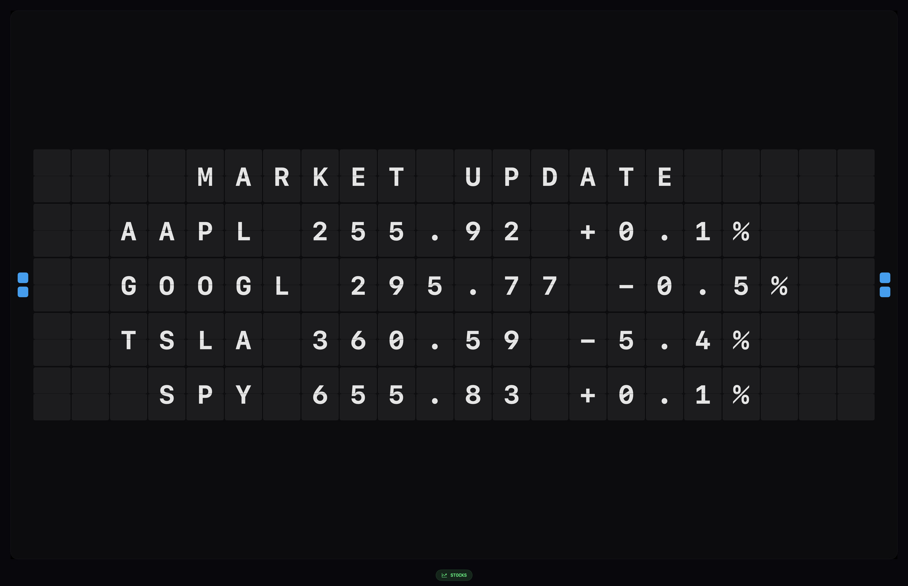

Turn your Mac into a retro split-flap display with live weather, stocks, news, quotes & time — as a native macOS screensaver and menu bar app.

FlipDash cycles through real-time data — weather, stocks, news, quotes, and time — each rendered with authentic split-flap animation.
Every detail — from staggered tile timing to mechanical sound effects — is crafted to recreate the analog charm of a departure board.
Each tile flips through intermediate characters with staggered left-to-right, top-to-bottom timing — just like a real mechanical board.
Installs as a true macOS screensaver that activates when your Mac goes idle. All your settings sync automatically from the companion app.
Authentic split-flap clacking sounds with adjustable volume. Hear every character flip into place — or silence it with a toggle.
Toggle vibrant flashes of cyan, teal, purple, and orange as tiles flip through characters. A modern twist on a classic display.
Classic (22×5), Large (32×7), or Ultra Wide (44×9) — or let FlipDash automatically scale to your display. Ultra-wide layouts unlock multi-column data.
No Dock icon, no clutter. FlipDash lives quietly in your menu bar with quick access to settings, screensaver controls, and more.
FlipDash installs a native macOS screensaver that transforms your idle display into a cycling departure board of live data. Weather at a glance. Stock prices ticking. Headlines flipping. All with that unmistakable mechanical rhythm.

Enable or disable any data source. Pick your stock tickers. Set your city or let FlipDash detect it. Adjust rotation speed from 5 to 60 seconds. Toggle sounds, colors, and density — everything syncs instantly to the screensaver.

The live board cycling through the exact content modes you get in the app: time, weather, stocks, breaking news, and quotes.
FlipDash is fully sandboxed. No user accounts. No data collection. Location is used only for weather and never leaves your Mac. All API keys are server-side. Your data stays yours.